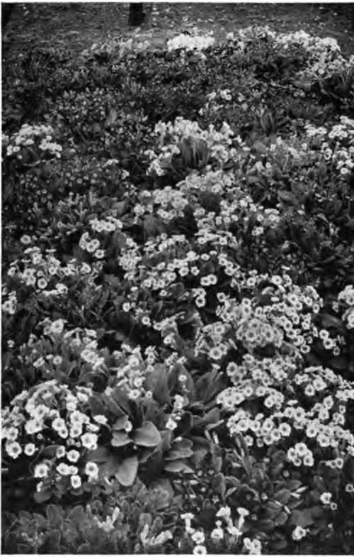

The Joy Of A Flower Hobby. Continued
Description
This section is from the book "Flower Gardening", by H. S. Adams. Also available from Amazon: Flower gardening.
The Joy Of A Flower Hobby. Continued
The iris offers just as fascinating a field as the lily, with the advantage of being a less expensive hobby within the zone of easy culture. "The poor man's orchid" has the further advantage of a materially greater variation of species. One could easily make a hobby of the German, the Japanese, the Spanish or the English iris, so many are the varieties of each. No less than fifty-six named varieties of Japanese iris are in a single American list. Another offers forty-two German irises, while in a British list are thirty-five Spanish irises and thirty-two of the English—and all these are only selections from larger nursery collections.
Of the easiest irises there are a dozen or more species; and as these bloom in April, May, June and July, the hobby opportunities are enough to bring contentment without going in for those that require coddling. The latter are a small army. There are more than thirty bulbous and tuberous-rooted species that are hardy in England where they bloom from November to June, and fifteen of the cushion irises, mostly from Palestine. Some of these, I. reticulata, I. pavonia, I. alata and /. susiana, have been wintered outdoors in this country and there are others that would survive with the protection that they get abroad. The truth is that more plants would prove hardy in American gardens if they were given the care that they have in England. There the gardeners not only take all pains to place tender plants in sheltered spots and to give them winter protection to suit their individual needs, but small glass frames—hand ones are used freely in winter and spring and also to enable bulbs and tubers to secure their required "dry season" after blooming.
The rose genus is a fascinating field for a flower hobby along lines that have seldom been tried by the amateur. There are a great many species, both bush and climbing; and if the space is available, a fair representation of these will make a collection of practically assured permanence. Anyone who takes up species in this way will find their beauty a revelation and will not wonder that single roses stand so high in culture today. Or a species may be taken up with some of its variations; perhaps the sweet brier (Rosa rubiginosa) and Lord Penzance's famous hybrids, of which there are at least fifteen. In time add the other briers, notably the Austrian; there are some wonderful yellow and coppery tones.
Going in for double bedding roses as a hobby means, of course, concentrating on one of a few classes and then selecting from a bewildering array of names. The hybrid tea, now the chief bedding rose, has two hundred and fifty varieties in one catalogue and a third as many hybrid perpetuáis, neither list being more than the especially desirable varieties. In the same catalogue the dwarf polyan-tha roses number about thirty and the Rosa rugosa variations fourteen. A combination of carefully selected hybrid teas and the best of the climbing roses would be an excellent one.
One amateur divides his hobby interest very agreeably by concentrating on the hardy primrose (Primula) for spring and the hardy chrysanthemum for autumn. He rather envies a Scotch physician who grows more than one hundred and twenty-five primulas, with any number of varieties, and a friend nearer home whose named chrysanthemums are above two score. But this amateur wisely limits himself for the present to about a dozen of the hardiest primula species and less than twenty varieties of chrysanthemums. When he has the time to take proper care of more he will possess them, not before. The primulas are among the most charming of subjects for a flower hobby.
"The primulas are among the most charming subjects for a flower hobby".
Another very charming subject is the bellflower (Campanula). There is an endless number of bell-flowers, but not all are of interest unless one is collecting for numbers. A dozen or so perennial species, with the biennial Canterbury bell and the annual Campanula Loreyt, are distinctly worth while. Others are the phlox, with its species blooming over a period of six months; the pink (Dianthus), which has a long season also and some beautiful dwarf species that the garden seldom sees; the violet (Viola), which has some fine foreign species other than the ones that are the forebears of the pansy and tufted pansy and several native ones that deserve more garden culture; the speedwell (Veronica), with profuse bloom over a long season; the morning-glory (Ipomcea), which has several fine species; the peony (Paeonia), both tree and herbaceous; the columbine (A quilegia), the poppy (Papaver), the stonecrop (Sedum), the saxifrage (Saxifraga) and the windflower (Anemone).
Among the bulbs and tubers thene are more temptations to stroll down pleasant paths. The dahlia, in its well-defined classes, and the gladiolus, in the species and the choicest representatives of their hybrids, rank with the best flowers for hobbies because of their quality possibilities. The tulip genus (Tulipa) and the daffodil (Narcissus), by either , species or classes; the crocus, the fritillary (Fritil-laria), the butterfly, globe and star tulips (Calo-chortus) and the dogtooth violet (Erythronium) are extremely interesting, though the task will be found a very difficult one in the northeastern part of the United States excepting in the first two instances.
Shrubs, too, are hobby subjects. The lilac (Syringa), of which there are several species and a great many varieties, is one of the best of them. The rhododendron and azalea are quite as good in their showier way. Permanence of investment considered, none of these can be called an extravagant hobby. The viburnum forms an interesting group of considerable size; so do the barberry (Berberis), the dogwood (Cornus), the hawthorn Crataegus), the St. John's wort (Hypericum), the honeysuckle (Lonicera)% the mock orange (Philadelphus), the bramble (Rubus), the spirea, the elder (Sam* bucus), the sumac (Rhus) and the currant (Ribes).
A few of the annuals are to be had in various species, though this point is generally overlooked by the grower of flowers. Half a dozen species of annual chrysanthemum are on the market and as many of candytuft (Iberis) and centaurea. The great annual for specializing is the sweet pea. Too many think the sweet pea (Lathyrus) easy. Indifferent blooms, it is true, are not very hard to bring into the garden; but immense ones of marvelous form and growing on plants exceeding eight feet in height are only to be had as the result of cultural skill. Any one who grows even a dozen of the best named varieties of a choice strain will find that be has no small hobby on his hands. This dozen can be chosen from a list of one hundred and sixty-five varieties; doubtless from longer lists also.
Aside from Bailey's monumental work, there are many books of reference that can be used as the means of education in the pursuit of a flower hobby. The rose, iris, daffodil, lily and crocus have all had books written about their species and hybrids. Catalogues, too, frequendy are of incomplete botanical assistance, but now and then there is needless confusion of name. It must be borne in mind also that common names are not always to be relied upon for establishing the genus of a plant. Thus the Christmas rose belongs to the genus Helleborus not Rosa; the Guernsey lily to Nerine, not Lilium; the grape hyacinth to Muscari, and so on. If your hobby is roses, however, and you think that you would like Christmas roses with others, just let them come in and say nothing; botany can be dreadfully elastic in the gardens, sometimes.
Whether the hobby serves any marked decorative purpose is of minor importance. The prime object is the production of perfect individuals and very often it is much more convenient to put the plants in rows in a secluded part of the grounds, using, perhaps, the surplus for special display elsewhere. In such a place the raggedness incidental to seed-saving does not matter and there is plenty of room for experimenting with cuttings and seedlings, as well as hybridizing—if one has the time for that.
Continue to:
- prev: Chapter XX. The Joy Of A Flower Hobby
- Table of Contents
- next: Chapter XXI. Knowing The Flowers By Name